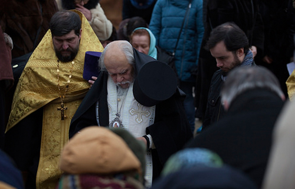
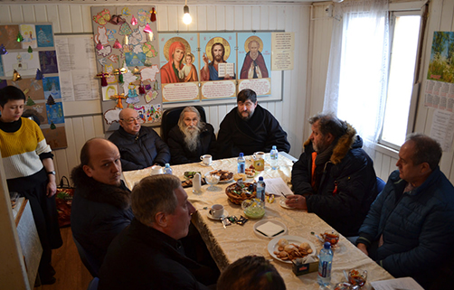

Местная религиозная организация Московской епархии Русской Православной Церкви (Московский Патриархат)
Дорогие братья и сестры
Приглашаем Вас каждое воскресенье в 13.00 на молебен о
строительстве Храма преподобного Саввы Сторожевского.
Молебен служится на месте строительства по адресу: пл.
Викторио Кодовильи, вл. 1 напротив бывшего кинотеатра
“Енисей”
Дорогие братья и сестры
Приглашаем детей в возрасте от 5 лет для занятий в воскресной
группе при храме преподобного Саввы Сторожевского.
Занятия начнутся с октября 2016 года.
Запись в группу осуществляется по воскресеньям с 13-14 часов.

Освящение закладного камня
7 февраля 2016 года в 14.00 прихожане строящегося храма
в честь преподобного Саввы Сторожевского встречали
владыку Пантелеимона, епископа Орехово-Зуевского. Жители
нашего района собрались на чин освящения закладного камня
в фундамент будущего храма. Это поистине историческое
событие для жителей нашего района и города в целом. Храм
преподобного Саввы...

Визит Ресина В.И.
2 февраля 2017 года строительную площадку храма преподобного
Саввы Сторожевского в Измайлово посетили член комитета Госдумы
по земельным отношениям и строительству, советник Святейшего
Патриарха Московского и всея Руси Кирилла, Владимир Иосифович
Ресин. Вместе с ним строящийся храм посетил архимандрит Илия.
В ходе визита были отмечены значительные успехи строительства и